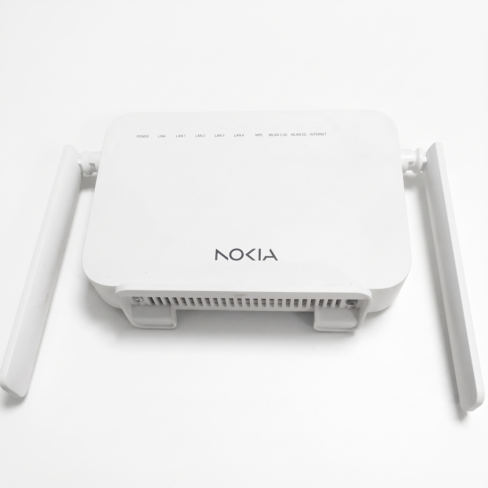

Nokia
Nokia
Tampilan umum halaman admin Nokia untuk ubah WiFi dan password.
Panduan modem
Panduan untuk modem Nokia. Langkah mengganti SSID dan password sama seperti umumnya.

Model tersedia
Tampilan umum halaman admin Nokia untuk ubah WiFi dan password.
Urutan setting
Langkah umum: login ke halaman admin, buka pengaturan wireless/WLAN, ubah SSID dan security, lalu simpan.
Hubungkan perangkat ke WiFi modem Nokia yang ingin diubah.
Akses http://192.168.1.1 atau alamat yang tertera pada modem, lalu masukkan akun login teknisi.
Cari menu berlabel Wireless, WLAN, atau SSID untuk mengatur nama WiFi.
Isi SSID baru sesuai keinginan pelanggan.
Pilih menu Security, atur password minimal 8 karakter, lalu simpan.